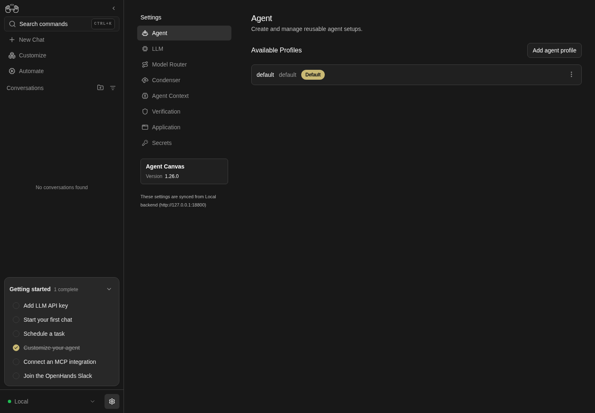

How to get to it
- Sidebar footer gear next to the backend selector (
backend-selector-settings-link), on desktop or inside the phone drawer (sidebar-mobile-menu-toggle, thensidebar-mobile-drawer >> backend-selector-settings-link). - Collapsed sidebar: the gear icon at the bottom of the rail (
collapsed-settings-link). - Command menu (
Control+k/Meta+korcommand-menu-trigger): group Settings with Settings, Agent settings, LLM profiles, Model Router, Condenser settings, Agent Context, Verification settings, Application settings, Secrets settings. - Deep links: Home banner Set up LLM (
home-llm-not-configured-action, only while no LLM key is configured); getting-started checklist Add LLM API key and Customize your agent; composer LLM pill (chat-input-llm-profile) → LLM Profiles; composer + (chat-plus-button) → Switch agent profile → Manage agent profiles. Application settings also links "Manage LLM profiles" (F15's page). - Direct URLs:
/settings,/settings/agents,/settings/llm,/settings/meta-llm,/settings/condenser,/settings/agent-context,/settings/verification,/settings/app,/settings/secrets, and the legacy/settings/agent. - Inside Settings: the left nav (
sidebar-settings-/settings/<page>) on desktop; the hub list (settings-mobile-hub) plus the top-bar Back chevron (sidebar-mobile-back-button) on phones.
Before you start
Start with the common launch and health checks, then follow this family’s preconditions in order. Recipes share the fixtures and state named below.
Preconditions:
- Baseline state (launched, doctored,
onboard --skipdone), desktop viewport. - Run the banner and checklist deep links (
F09.entry-deep-links, first bullet) before configuring a model: the banner only exists while no LLM key is set. - The composer picker deep links need a configured profile:
control-openhands llm preset deepseek(no model call is made). F09.cloud-linkspositive case andF09.locked-cloud-landingneed a Cloud backend/account (blocked in a local run).F09.hidden-llm-redirectis blocked: the frontend hardcodeshide_llm_settings: false. The update states depend on the browser reachingregistry.npmjs.org: with access and a current client you getF09.update-up-to-date;F09.update-availableand the version tile also need an npmlatestnewer than the client (blocked while the client is the latest release); the failure text ofF09.update-modalneeds the registry to be unreachable (no mocks).
Behavior inventory
25 stable behavior IDs and their expected behavior
F09.entry-gearthe sidebar gear opens Settings on the Agent page; the gear is marked active on every settings URL; at phone width the drawer's gear opens the hub and closes the drawer. Read recipe ↓F09.entry-collapsed-railwith the sidebar collapsed, the rail's Settings icon opens the Agent page. Read recipe ↓F09.entry-deep-linksthe Home "Set up LLM" banner, the checklist items "Add LLM API key" and "Customize your agent", the composer LLM picker's "LLM Profiles" link and the + menu's "Manage agent profiles" link each land on/settings/llmor/settings/agents. Read recipe ↓F09.index-redirecton desktop,/settingsreplaces itself with/settings/agents(Back skips/settings). Read recipe ↓F09.locked-cloud-landingon a canvas locked to a Cloud host,/settingslands on/settings/appinstead.F09.legacy-agent-redirectthe retired/settings/agentURL replaces itself with/settings/agents. Read recipe ↓F09.page-headereach page shows its nav title as an H2 with a grey subline; Secrets draws its own header instead, and the Agent profile editor hides the shell header until you leave it. Read recipe ↓F09.landmarksthe settings screen exposes a singlemainlandmark, on desktop pages and on the phone hub. Read recipe ↓F09.phone-hubbelow 1024 px (phones and tablets),/settingsstays put and shows a "Settings" heading, the eight links, the version card and the synced note, with no page header and no horizontal overflow. Read recipe ↓F09.hub-resize-redirectwidening the window to ≥1024 px while the phone hub is open replaces/settingswith/settings/agents; narrowing on a sub-page keeps its URL and adds the Back chevron. Read recipe ↓F09.breakpoint-sweepat 767, 768, 820, 1023, 1024 and 1440 px,/settingsis the hub below 1024 px and redirects to the desktop nav from 1024 px up, and the Application page'smainis at least 340 px wide with no horizontal overflow. Read recipe ↓F09.phone-backat phone width each settings page shows a Back chevron (label "Settings") in the top bar that returns to the hub. Read recipe ↓F09.synced-badgethe nav footer reads "These settings are synced from Local backend (<origin>)" for the active backend. Read recipe ↓F09.cloud-linkson a Cloud backend only, the nav adds "Integrations" and "All Cloud Settings" external links; on a local backend neither exists. Read recipe ↓F09.update-cardthe "Agent Canvas / Version x.y.z" card opens a dialog; its "Up to date" / "Update" badge appears only once the npm check succeeded. Read recipe ↓F09.update-modalthe dialog shows the version, a "Check for updates" button that re-runs the check, and an inline status; a failed check reads "Couldn't check for updates. Try again later."; Close and Escape dismiss it. Read recipe ↓F09.update-up-to-datewhen the npm check succeeds and the client is current, the card badge reads "Up to date", the dialog status reads "You're running the latest version." with a "What's new" link to the GitHub releases page (new tab), and "Check for updates" briefly shows "Checking for updates…". Read recipe ↓F09.update-availablewhen npm has a newer version, the dialog shows "Version … is available.", a "What's new" link, and npm/Docker command tabs with a copy button. Read recipe ↓F09.update-modal-phonethe update dialog fits a 390 px (and a 320 px) viewport with its title and Close button on screen, and Close dismisses it. Read recipe ↓F09.unknown-subpathan unknown/settings/<x>URL shows the app's "Page not found" page inside the app shell (sidebar and a Home link), without the settings shell. Read recipe ↓
Readable recipes
Read each script from top to bottom. Code is copied from the map; prose gives the action, expected observation, and conditions. <id>, <run> and similar placeholders stand for values from your own run. Short forms such as browser count continue the same control-openhands invocation; they are kept as documented.
Expected observations describe the recipe’s contract. Captures below selected recipes show representative real states from this snapshot; they do not mark every mapped behavior as passed. Follow cleanup before moving to another family.
No recipes match. Try another word or a behavior ID.
Gear entry and index redirect #
- NoteFrom
/, run - Do
control-openhands browser click 'testid=backend-selector-settings-link' - Wait
control-openhands browser wait-url '/settings/agents$' - Check
control-openhands browser attr 'testid=sidebar-settings-/settings/agents' aria-currentis
pageand - Check
control-openhands browser attr 'testid=backend-selector-settings-link' data-activeis
true(it isfalseagain on/). - Do
control-openhands browser back - Check
control-openhands browser url - Note: the URL is
/, not/settings, which proves the redirect replaced history. - NoteDirect entry:
- Do
control-openhands browser goto /settingsreturns
"url": ".../settings/agents".
Collapsed rail #
- NoteFrom
/(control-openhands browser goto /; the previous bullet ends on/settings/agents, where the URL wait would pass at once) run - Do
control-openhands browser click 'testid=sidebar-collapse-toggle' - Do
control-openhands browser click 'testid=collapsed-settings-link' - Wait
control-openhands browser wait-url '/settings/agents$' - Do
control-openhands browser screenshot --feature F09.entry-collapsed-rail --name rail - ExpectThe screenshot shows the icon rail, the settings nav with Agent highlighted.
- NoteRestore with
- Do
control-openhands browser click 'testid=sidebar-collapse-toggle'(the label flips back to "Collapse sidebar").
Command menu #
- NoteFirst rest the pointer off the list with
- Do
control-openhands browser hover 'testid=command-menu-trigger' - Note: a hover can move the menu's selection, and Enter runs the selected option (F02 Gotchas).
- NoteFor each title run
- Do
control-openhands browser goto / - Do
control-openhands browser press Control+k - Do
control-openhands browser type 'testid=command-menu >> role=combobox' 'LLM profiles' - Do
control-openhands browser press Enter - Wait
control-openhands browser wait-url '/settings/llm$' - NoteExpected targets:
Settings→/settings/agents,Agent settings→/settings/agents,LLM profiles→/settings/llm,Model Router→/settings/meta-llm,Condenser settings→/settings/condenser,Agent Context→/settings/agent-context,Verification settings→/settings/verification,Application settings→/settings/app,Secrets settings→/settings/secrets. - Check
control-openhands browser snapshot 'testid=command-menu >> role=listbox' - Noteafter typing
LLM profilesshows two options under the "Settings" group text:LLM profiles[selected]andModel Router, whose subline mentions LLM profiles. - NoteEnter runs the selected one.
Command menu coverage #
- Do
control-openhands browser goto / - Do
control-openhands browser press Control+k - Do
control-openhands browser type 'testid=command-menu >> role=combobox' 'Model Router' - Check
control-openhands browser snapshot 'testid=command-menu >> role=listbox' - ExpectIt shows one option under the "Settings" group text:
Model Router Meta-profiles that route each task to the right LLM profile. Go[selected]. - Do
control-openhands browser press Enter - Wait
control-openhands browser wait-url '/settings/meta-llm$' - Check
control-openhands browser count 'testid=command-menu'is
0. - NoteRepeat from
/withAgent Context: the option readsAgent Context Let the agent keep notes and recall them in new conversations. Goand the URL becomes/settings/agent-context. - NoteWith the previous bullet, every page in the settings nav has opened from the menu.
Deep links without a model #
- NoteOn
/with no LLM key (control-openhands browser goto /): - Do
control-openhands browser click 'testid=home-llm-not-configured-action' - Wait
control-openhands browser wait-url '/settings/' - Note→
/settings/llm. - Do
control-openhands browser goto / - Do
control-openhands browser click 'testid=sidebar-onboarding-checklist-item-configure-llm' - Wait
control-openhands browser wait-url '/settings/' - Note→
/settings/llm. - Do
control-openhands browser goto / - Do
control-openhands browser click 'testid=sidebar-onboarding-checklist-item-customize-agent' - Wait
control-openhands browser wait-url '/settings/' - Note→
/settings/agents.
Deep links from the composer #
- NoteAfter
- Arrange
control-openhands llm preset deepseek - Do
control-openhands browser goto / - Do
control-openhands browser click 'testid=chat-input-llm-profile' - Do
control-openhands browser click 'testid=chat-input-llm-profile-popover >> role=link[name="LLM Profiles"]' - Wait
control-openhands browser wait-url '/settings/llm$' - Check
control-openhands browser count 'testid=chat-input-llm-profile-popover'is
0. - Do
control-openhands browser goto / - Do
control-openhands browser click 'testid=chat-plus-button' - Do
control-openhands browser hover 'testid=switch-agent-profile-button' - Do
control-openhands browser click 'testid=agent-profile-submenu >> role=link[name="Manage agent profiles"]' - Wait
control-openhands browser wait-url '/settings/agents$' - Check
control-openhands browser count 'testid=tools-context-menu'is
0.
Legacy URL #
- Do
control-openhands browser goto / - Do
control-openhands browser goto /settings/agent - Notethe result already reads
.../settings/agents. - Do
control-openhands browser backreturns to
/.
Desktop nav #
- NoteOn any settings page (
control-openhands browser goto /settings/agents; Legacy URL ends on/) run - Check
control-openhands browser snapshot 'testid=settings-navbar-desktop' - Note: links Agent, LLM, Model Router, Condenser, Agent Context, Verification, Application, Secrets (with
/urls), thenbutton "Agent Canvas Version …"and the synced text. - NoteClick each one, e.g.
- Do
control-openhands browser click 'testid=sidebar-settings-/settings/meta-llm' - Wait
control-openhands browser wait-url '/settings/meta-llm$' - Check
control-openhands browser attr 'testid=sidebar-settings-/settings/meta-llm' aria-current(
page), and - Check
control-openhands browser count 'testid=settings-navbar-desktop >> [aria-current="page"]'(
1). - NotePinned:
- Do
control-openhands browser goto /settings/app(the only page taller than the viewport),
- Check
control-openhands browser bbox 'testid=settings-navbar-desktop'(
y32), - Do
control-openhands browser hover 'testid=settings-page-subtitle' - Do
control-openhands browser scroll --by 1000 - Check
control-openhands browser bbox 'testid=settings-page-subtitle'(negative
y, content scrolled) and - Check
control-openhands browser bbox 'testid=settings-navbar-desktop'(still
y32); - Do
control-openhands browser screenshot --feature F09.desktop-nav --name scrolledshows Git Settings on the right and the full nav on the left.

Agent settings with a separate settings navigation listing Agent, LLM, Model Router, Condenser, Agent Context, Verification, Application and Secrets.
Representative documentation capture, not a complete run of this recipe or family. Captured on an isolated local backend at desktop viewport using the current main checkout.
How this screenshot was taken
canvas: 1.26.0 · agent server: 1.53.0 · sdk: 1.53.0 · automation: 1.19.0
OH_VERIFY_RUN="$OH_VERIFY_RUN" control-openhands browser goto /settings/agents
OH_VERIFY_RUN="$OH_VERIFY_RUN" control-openhands browser wait testid=agent-profile-row
OH_VERIFY_RUN="$OH_VERIFY_RUN" control-openhands browser screenshot --feature F09.desktop-nav --name settings-navigationPage header #
- ExpectAfter each nav click,
- Check
control-openhands browser text 'testid=settings-screen >> header'reads title + subline: Agent "Create and manage reusable agent setups.", LLM "Model, API key, and options for the agent.", Model Router "Meta-profiles that route each task to the right LLM profile.", Condenser "Summarize long chats to stay within context limits.", Agent Context "Let the agent keep notes and recall them in new conversations.", Verification "Confirmation prompts and security checks on actions.", Application "Language, theme, notifications, and Git identity.".
- NoteOn Secrets,
- Check
control-openhands browser count 'testid=settings-screen >> header >> h2'is
0(the page draws its own "Secrets" heading). - NoteEditor: on
/settings/agents(control-openhands browser goto /settings/agents) run - Do
control-openhands browser click 'testid=add-agent-profile' - Check
control-openhands browser count 'testid=settings-page-subtitle'is
0and - Check
control-openhands browser text 'testid=settings-screen >> h2'is
Add agent profile. - Do
control-openhands browser click 'testid=back-to-agent-profiles' - Notebrings the subtitle back (count
1); opening the editor again and clickingtestid=sidebar-settings-/settings/condenseralso shows the Condenser subline.
Landmarks #
- Do
control-openhands browser goto /settings/agents - Check
control-openhands browser count 'role=main'(
1) and - Do
control-openhands browser eval "document.querySelector('[data-testid=settings-screen]').tagName"(
DIV: the shell wrapper is not a landmark; the layout's own<main>is). - Do
control-openhands browser goto /settings/app - Noteand the same
countis1. - NoteAt phone width (
control-openhands browser viewport phone,control-openhands browser goto /settings) the hub also counts1; return with - Do
control-openhands browser viewport desktop
Phone hub and Back #
- Do
control-openhands browser viewport phone - Do
control-openhands browser goto /settings(URL stays
/settings), - Check
control-openhands browser snapshot 'testid=settings-mobile-hub'(heading "Settings", the eight links, the version button, the synced text),
- Check
control-openhands browser count 'testid=settings-page-subtitle'(
0), - Check
control-openhands browser bbox 'testid=settings-mobile-hub'(
pageHorizontalOverflowfalse) and - Do
control-openhands browser screenshot --feature F09.phone-hub --name hub - Do
control-openhands browser click 'testid=settings-mobile-hub >> testid=sidebar-settings-/settings/condenser' - Wait
control-openhands browser wait-url '/settings/condenser$' - Check
control-openhands browser attr 'testid=sidebar-mobile-back-button' aria-label(
Settings), - Do
control-openhands browser click 'testid=sidebar-mobile-back-button' - Wait
control-openhands browser wait-url '/settings$' - Check
control-openhands browser visible 'testid=settings-mobile-hub'(
true). - NoteDrawer entry:
- Do
control-openhands browser goto / - Do
control-openhands browser click 'testid=sidebar-mobile-menu-toggle' - Do
control-openhands browser click 'testid=sidebar-mobile-drawer >> testid=backend-selector-settings-link' - Wait
control-openhands browser wait-url '/settings$' - Check
control-openhands browser visible 'testid=sidebar-mobile-drawer'is
false(the drawer closed). - NoteReturn with
- Do
control-openhands browser viewport desktop
Resize from the hub #
- Do
control-openhands browser goto / - Do
control-openhands browser viewport phone - Do
control-openhands browser goto /settings - Check
control-openhands browser visible 'testid=settings-mobile-hub'(
true). - Do
control-openhands browser viewport desktop - Wait
control-openhands browser wait-url '/settings/agents$' - Note: the hub is gone (
count 'testid=settings-mobile-hub'is0) and - Do
control-openhands browser back - Notelands on
/(the redirect replaced/settings). - NoteReverse:
- Do
control-openhands browser goto /settings/condenser - Do
control-openhands browser viewport phone - Check
control-openhands browser url(still
/settings/condenser) and - Check
control-openhands browser visible 'testid=sidebar-mobile-back-button'(
true). - NoteTablets get the hub too, and the boundary is 1024 px: run
- Do
control-openhands browser viewport tablet(820 px),
- Do
control-openhands browser goto /settings(URL stays
/settings) and - Check
control-openhands browser visible 'testid=settings-mobile-hub'(
true); then - Do
control-openhands browser viewport 1023x900 - Do
control-openhands browser goto /settings - Noteand the same
visible(true); then - Do
control-openhands browser viewport 1024x900 - Wait
control-openhands browser wait-url '/settings/agents$'(
browser visible 'testid=settings-navbar-desktop'istrue). - NoteReturn with
- Do
control-openhands browser viewport desktop
Widths around the breakpoint #
- NoteFor each width
Win767,768,820,1023,1024,1440run - Do
control-openhands browser viewport Wx1024 - Do
control-openhands browser goto /settings - NoteBelow 1024 px the URL stays
/settings, - Check
control-openhands browser visible 'testid=settings-mobile-hub'is
trueand - Check
control-openhands browser bbox 'testid=settings-mobile-hub'has
pageHorizontalOverflowfalse(725, 426, 478 and 681 px wide); from 1024 px up - Wait
control-openhands browser wait-url '/settings/agents$' - Notepasses and
- Check
control-openhands browser visible 'testid=settings-navbar-desktop'is
true. - Do
control-openhands browser goto /settings/app - Check
control-openhands browser bbox 'role=main' - Note:
widthis at least 340 (767, 468, 520, 723, 424 and 840 today: full width at 767 px,W − 300beside the rail up to 1023 px,W − 600beside the rail and the settings nav from 1024 px),scrollWidthequalsclientWidthandpageHorizontalOverflowisfalse(insideViewportisfalseonly because the page is taller than 1024 px). - NoteTake
- Do
control-openhands browser screenshot --feature F09.breakpoint-sweep --name app-767 - Noteand
--name app-1024. - NoteFinish with
- Do
control-openhands browser viewport desktop
Synced badge #
- Check
control-openhands browser text 'testid=backend-synced-settings-badge' - Do
control-openhands browser eval 'location.origin' - ExpectThe text is
These settings are synced from Local backend (<origin>)with the same origin.
Cloud links #
- NoteOn a local backend
- Check
control-openhands browser count 'testid=settings-integrations-link' - Check
control-openhands browser count 'testid=settings-cloud-link'are both
0. - NotePositive case (blocked without a Cloud account): with a Cloud backend active both exist; "All Cloud Settings" points at
<cloud host>/settings?org=<org id>and opens in a new tab unless the canvas is locked to Cloud.
Update card and dialog #
- NoteOn a settings page run
- Check
control-openhands browser text 'testid=agent-canvas-update-toggle'(
Agent Canvas,Version, the client version, plus the badge text when present), - Check
control-openhands browser count 'testid=agent-canvas-update-badge'(
0while the npm check fails;1with "Up to date" or "Update" when it succeeds), then - Do
control-openhands browser click 'testid=agent-canvas-update-toggle' - Wait
control-openhands browser wait 'testid=agent-canvas-update-modal' - Check
control-openhands browser text 'testid=agent-canvas-update-status' - NoteWith registry access and a current client the status is
You're running the latest version. What's new, and - Check
control-openhands browser attr 'testid=agent-canvas-update-release-notes' hrefis
https://github.com/OpenHands/OpenHands/releases(target_blank). - NoteWithout registry access the status is
Couldn't check for updates. Try again later.Re-check: run - Check
control-openhands browser network --clear - Do
control-openhands browser click 'testid=agent-canvas-update-check-button' --observe 'testid=agent-canvas-update-modal' --observe-ms 2000(the observed states include
Checking for updates…before the final status), then - Check
control-openhands browser network - Note: exactly one new
GET https://registry.npmjs.org/@openhands/agent-canvas/latestproves the button re-checked (browser errorsdoes not list successful requests). - Check
control-openhands browser enabled 'testid=agent-canvas-update-check-button'is
trueagain. - NoteClose with
- Do
control-openhands browser click 'testid=close-agent-canvas-update-modal'(modal count
0); reopen and - Do
control-openhands browser press Escape - Notealso closes it.
Update available #
- NoteBlocked unless the browser reaches the registry and npm
latestis newer than the client (a checkout at the latest release showsF09.update-up-to-dateinstead). - NoteWith both, and a newer npm
latestthan the client, the status showsVersion <x> is available.withtestid=agent-canvas-update-release-notes("What's new"), the npm tabtestid=agent-canvas-update-command-npmreads - Do
npm install -g @openhands/agent-canvas@latest - Notethe Docker tab reads
- Do
docker pull ghcr.io/openhands/agent-canvas:latest - Noteand
testid=copy-to-clipboardturns into a check mark for 2 s.
Update dialog at phone width #
- Do
control-openhands browser viewport phone - Do
control-openhands browser goto /settings - Do
control-openhands browser click 'testid=settings-mobile-hub >> testid=agent-canvas-update-toggle' - Wait
control-openhands browser wait 'testid=agent-canvas-update-modal' - Check
control-openhands browser bbox 'testid=agent-canvas-update-modal' - Check
control-openhands browser bbox 'testid=close-agent-canvas-update-modal' - Do
control-openhands browser screenshot --feature F09.update-modal-phone --name dialog - ExpectBoth boxes have
insideViewporttrueandpageHorizontalOverflowfalse: the dialog is 351 px wide atx19.5 and Close is atx329.5; the screenshot shows the whole "Agent Canvas" title and the X. - Do
control-openhands browser click 'testid=close-agent-canvas-update-modal' - Notecloses it (
control-openhands browser count 'testid=agent-canvas-update-modal'is0). - Do
control-openhands browser viewport narrow(320×700) and repeat the
goto,click,waitand bothbboxcommands: the dialog is 288 px wide atx16 and Close is atx263, both inside the viewport; - Do
control-openhands browser press Escape - Notecloses it.
- Do
control-openhands browser viewport desktop
Sidebar version tile #
- NoteOn
/run - Check
control-openhands browser count 'testid=agent-canvas-version-tile' - ExpectIt is
0unless the npm check found a newer version, also when the check succeeded with "Up to date" (positive case blocked without registry access or while the client is the latest release).
Unknown sub-page #
- Do
control-openhands browser goto /settings/does-not-exist - Check
control-openhands browser snapshot 'testid=not-found-screen' - Note:
heading "Page not found", the paragraphThis address does not match any page. Check the URL, or go back to the home page.andlink "Home". - ExpectThe settings shell is absent (
control-openhands browser count 'testid=settings-screen'andcontrol-openhands browser count 'testid=settings-navbar-desktop'are0), while the app sidebar stays (control-openhands browser count 'aside[data-collapsed]'is1). - Do
control-openhands browser screenshot --feature F09.unknown-subpath --name not-foundshows the message beside the sidebar.
- NoteLeave with
- Check
control-openhands browser click 'testid=not-found-home-link' --expect-url '/$'
After the family #
- Check
control-openhands browser errors --clear - Notebefore the family and
- Check
control-openhands browser errors --app-only - Noteafter it.
- NoteExpected:
pageErrors0andappErrors0; the unknown sub-page adds no errors. - ExpectThe Agent profile editor logs
[i18n] Missing translation for key "SCHEMA$TOOL_CONCURRENCY_LIMIT$…"console warnings, counted underwarnings, not as errors (the Agent page's family). - ExpectA registry request failure, when the sandbox blocks npm, is external.
Gotchas and known limits
browser clickreturns the URL before client-side navigation and redirects settle (it prints/or/settings). Always follow a navigating click withbrowser wait-url '<regex>$'before asserting.- At phone width there are two
backend-selector-settings-linkelements (hidden desktop sidebar plus the drawer); scope withtestid=sidebar-mobile-drawer >> ...or the click fails in strict mode. The hub's nav links share testids with the desktop nav, so scope them withtestid=settings-mobile-hub >> .... - The page does not scroll inside the settings
<main>; the app shell column does.browser scroll <selector> --by Nonly scrolls the element into view and ignores--by; hover the content first, thenbrowser scroll --by N(mouse wheel at the pointer). - Only
/settings/appis taller than a 1000 px viewport in a fresh run; use it for the pinned-nav check. - Visiting
/settings/agentsticks the checklist item "Customize your agent" for good (struck through, still a working link, so the bullet order above is fine), and configuring a model hides the Home banner. Run the banner deep link beforellm preseton a fresh run. - Registry reachability depends on the sandbox and changes between runs. When the browser cannot reach
registry.npmjs.org(seen asERR_CERT_AUTHORITY_INVALIDthrough a proxy), the version badge and sidebar tile stay hidden and the dialog shows the failure state; that is environment, not product. When it can, a checkout at the latest release shows "Up to date" and the failure text cannot be produced. Checkbrowser networkfor the registry request before deciding which update rows areblocked. - The update dialog's
role="dialog"wrapper has no accessible name, sorole=dialog[name=...]does not match it; usetestid=agent-canvas-update-modal. - The
/settings→/settings/agentsredirect only happens at ≥1024 px. Below that (phones and tablets)/settingsis the hub; do not expect a redirect there. - From 768 to 1023 px the sidebar rail stays and the top bar is gone, so a settings sub-page shows neither the settings nav nor a Back chevron (
browser visible 'testid=sidebar-mobile-back-button'isfalse); the rail's gear (backend-selector-settings-link) returns to the hub. - The phone hub is indented 32 px while sub-pages start at 16 px (hub padding inside the page padding); that is current layout, not overflow.
- The "LLM Profiles" rename in
useSettingsNavItemstargets a/settingsnav item that does not exist, so it never applies; the LLM nav item always reads "LLM".
Source paths: src/routes.ts, src/routes/settings.tsx, src/routes/settings-index.tsx, src/routes/agent-settings.tsx, src/constants/settings-nav.tsx, src/hooks/use-settings-nav-items.ts, src/utils/settings-utils.ts, src/components/features/settings/settings-layout.tsx, src/components/features/settings/settings-desktop-sidebar.tsx, src/components/features/settings/settings-mobile-hub.tsx, src/components/features/settings/backend-synced-settings-badge.tsx, src/components/features/settings/agent-canvas-update-card.tsx, src/components/features/settings/agent-canvas-version-tile.tsx, src/utils/mobile-section-nav.ts, src/components/features/command-menu/command-menu-items.tsx.